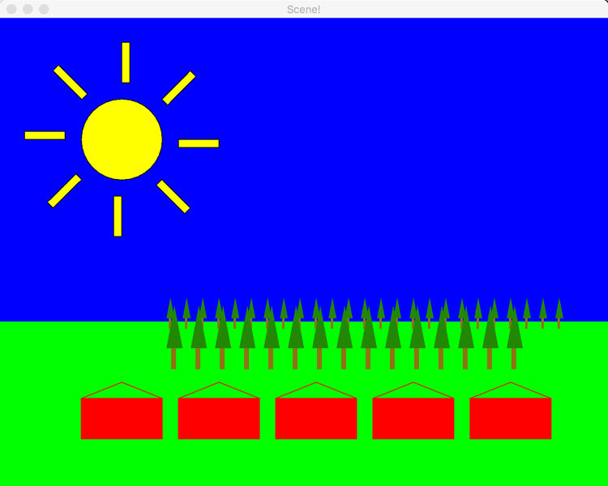

Homework Scenes
How to Import a ZIP File into Eclipse
Follow these steps to import a ZIP file containing an Eclipse project:
- Download the ZIP File (containing a project) to your computer but do not place in the eclipse workspace folder: Click here to donwload ZIP
- Open Eclipse: You do not need to create a new project because the ZIP file contains an existing project.
-
Import the Project:
- Click on
Filein the menu bar and selectImport.... - In the Import Wizard, expand the General category and select Existing Projects into Workspace. Click Next.
- Select the Select archive file option and click the Browse... button
- Navigate to the location where you saved the ZIP file, select it, and click Open
- The wizard will display the project(s) contained in the ZIP file. Make sure the desired project is checked
- Check if the box Copy projects into workspace is selected
- Click Finish to complete the import process
- Click on
- Verify the Imported Project: The project should now appear in your Package Explorer. Double-click it to open and review its contents.
Overview
- This exercise is intended to give you practice with Java Swing graphics and will help you with the term project
- This is a group exercise/assignment
Rubric
To earn a 100% for the assignment, your application must draw each of the images similar to the samples provided for Stages 1–4.
- Images for Stages 1, 2, and 3: 20% each
- Stage 4 image: 40%
- Total: 100%
Images will be evaluated on: (1) shape, (2) color, (3) individual lines, (4) rotations, and (5) placement.
Penalty Guidelines:
- 1 aspect not similar: -10% for that image
- 2 aspects not similar: -25% for that image
- 3 aspects not similar: -50% for that image
- 4 aspects not similar: -100% for that image
Example: If Stage 1 and 2 images are similar (20 points each), Stage 3 image has 2 aspects not similar (0.75 × 20 = 15 points), and Stage 4 image has 3 aspects not similar (0.50 × 40 = 20 points), then total score = 20 + 20 + 15 + 20 = 75 points.
Assignment Parts
-
Part 1:
- Stage 1 – Draw Houses: HouseViewer should draw an image similar to the sample below.
- Stage 2 – Draw Trees: PineTreesViewer should draw an image similar to the sample below.
-
Part 2:
- Stage 3 – Draw Suns: SunViewer should draw an image similar to the sample below
- Stage 4 – Draw Scene: SceneViewer should draw an image similar to the sample below
- Stage 5 – Draw Faces: SceneViewer should draw an image similar to the sample below
To Do
- Stage 0
- Stage 1
- Stage 2a and 2b
- Stage 3a, 3b, and 3c
- Stage 4a, 4b, and 4c
- Stage 5
Stage 0 – Study Your Goal
In the final stage, you will draw a scene consisting of houses, trees, a sun, and a background with sky and grass. You will start by drawing these elements in isolation and then combine them.
Houses: Consider three classes:
- House: Allows specification of the (x, y) position (upper-left corner of the house body) and its color. The class includes a
drawOn(Graphics2D graphics2)method. - HousesComponent: Draws multiple House objects.
- HousesViewer: Constructs and displays a HousesComponent.
Part 1: Stage 1 – Draw Houses

You are provided with the House, HousesViewer, and HousesComponent classes.
- Implement the House constructor.
- Implement the
drawOn(Graphics2D graphics2)method in House. Use a filled rectangle and two additional lines to draw the roof. The house dimensions are fixed:- Width: 100 pixels
- Height: 50 pixels
- Roof Height: 20 pixels (the top of the roof is 20 pixels above the given y-coordinate)
- Running the HousesViewer should display an image similar to the sample above.
Part 1: Stage 2a – Create PineTreesViewer and PineTreesComponent
- Create a class PineTreesViewer (with a main method) and another class PineTreesComponent (extending JComponent).
- Set the PineTreesViewer frame size to 500×400.
- Override the
paintComponentmethod in PineTreesComponent. Remember to callsuper.paintComponent(graphics);.
Part 1: Stage 2b – Creating the PineTree Class
Before drawing a PineTree, note the following:
- The PineTree constructor should take four parameters: x, y, width, and height. These represent the upper-left corner and dimensions of the bounding box for the tree.
- The trunk width is 1/3 of the box width and its height is 1/3 of the box height.
- The branches (drawn as a triangle) take up the full width and 2/3 of the height.
- Colors:
- Trunk: brown (
new Color(145, 112, 33)) - Branches: green (
new Color(40, 135, 22))
- Trunk: brown (
In PineTreesComponent's paintComponent:
- Create a PineTree instance using your constructor and call its
drawOnmethod. - Draw a second tree, half as tall and positioned so that the bottoms of the trunks align.
- For your final submission, update
paintComponentto:@Override protected void paintComponent(Graphics graphics) { super.paintComponent(graphics); Graphics2D graphics2 = (Graphics2D) graphics; PineTree tree = new PineTree(100, 100, 100, 200); tree.drawOn(graphics2); PineTree littleTree = new PineTree(300, 200, 50, 100); littleTree.drawOn(graphics2); }
The output should look similar to the sample image below:

Part 2: Stage 3a – Create SunViewer and SunComponent
- Create SunViewer (with a main method) and SunComponent (extending JComponent).
- Set the SunViewer frame size to 750×600.
- Override
paintComponentin SunComponent. - Define the following constants in SunComponent:
private static final double LITTLE_SUNS_X_OFFSET = 50; private static final double LITTLE_SUN_SIZE = 30.0; private static final double LITTLE_SUN_SEPARATION = 100.0; private static final int NUM_LITTLE_SUNS = 5; private static final double LITTLE_SUNS_Y = 400.0; private static final Color LITTLE_SUN_COLOR = Color.RED;
Part 2: Stage 3b – Creating the Sun Class
- The Sun’s x and y values represent the upper-left corner of the bounding box for its center circle.
- The space between the center circle and its rays is 20% of the circle’s diameter.
- The ray length is 50% of the Sun’s diameter; the ray width is 10%.
-
Create the Sun class with:
- Constants (e.g.,
BORDER_COLOR,NUMBER_OF_RAYS,RAY_LENGTH_SCALE, etc.) - Instance fields:
x,y,circleDiameter,rayLength,rayWidth,rayDistanceFromSun, andcolor. - A default constructor and an overloaded constructor with parameters (
x, y, circleDiameter, color).
- Constants (e.g.,
Part 2: Stage 3c – Draw a Sun
Your Sun should appear in two forms:
- Without Rays: A filled circle with a border.
- With Rays: The center circle plus rays drawn using a helper method (e.g.,
drawRay(Graphics2D g2d, double angle)).
Sample images:

Part 2: Stage 3d – Draw More Suns
- Test your positioning by drawing guide rectangles in SunComponent’s
paintComponentmethod. - Create multiple little Suns using a loop. Their x positions should start at
LITTLE_SUNS_X_OFFSETand be separated byLITTLE_SUN_SEPARATION. They should be drawn inLITTLE_SUN_COLOR. - For your final submission, ensure
paintComponent()matches the provided sample code:@Override protected void paintComponent(Graphics g) { super.paintComponent(g); Graphics2D g2 = (Graphics2D)g; Sun s = new Sun(); s.drawOn(g2); g2.drawRect(30, 30, 240, 240); s = new Sun(550, 100, 50, Color.BLUE); s.drawOn(g2); g2.drawRect(515, 65, 120, 120); double x = SunComponent.LITTLE_SUNS_X_OFFSET; for (int i = 0; i < SunComponent.NUM_LITTLE_SUNS; i++) { s = new Sun(x, SunComponent.LITTLE_SUNS_Y, SunComponent.LITTLE_SUN_SIZE, SunComponent.LITTLE_SUN_COLOR); s.drawOn(g2); x += SunComponent.LITTLE_SUN_SEPARATION; } }
Part 2: Stage 4a – Create SceneViewer and SceneComponent
- Create SceneViewer and SceneComponent (like Houses, PineTrees, and Suns). Note: There is no Scene class.
- Set the frame size to 750×600.
Stage 4b – Create a Scene
- Draw a blue rectangle for the sky in the upper 375 pixels.
- Draw a green rectangle for the grass in the remaining area.
Part 2: Stage 4c – Finish the Scene

- Add a Sun at its default location to the SceneComponent.
- Create a row of red houses in the foreground, evenly spaced using loops.
- Create a row of 25 little pine trees (10×40 pixels) behind the houses on the horizon.
- Create a row of 15 bigger pine trees (20×80 pixels) in front of the first trees.
- (Optional) Randomize the x and y coordinates of the trees slightly for a natural look.
Part 2: Stage 5 – Rotatable Faces
- Create a Face class, FacesViewer class, and FacesComponent class.
- Use an
Arc2D.Doublefor the mouth. Refer to the provided Geometry of a Face diagram for dimensions. - Draw several faces (in upright position) with varying sizes, colors, and positions to thoroughly test your classes.
- Implement a
translate(double x, double y)method in the Face class to update its coordinates. (This should only change the face’s coordinates.) - Implement a
rotate(double angleToRotate)method in the Face class to update a field storing the rotation angle. Test this by calling it in a loop within FacesComponent. -
Hint: Because faces and eyes are drawn as circles (
Ellipse2D.Double), consider temporarily switching to squares (Rectangle2D.Double) to better observe rotation. Remember to change back before submission.
Submission Guidelines
- Your final submission should include all stages (0–5)
- Ensure your code draws images similar to the samples provided for each stage
- Follow the instructions carefully, especially the specifications for shapes, colors, rotations, and placements
- See gradescope for submissions